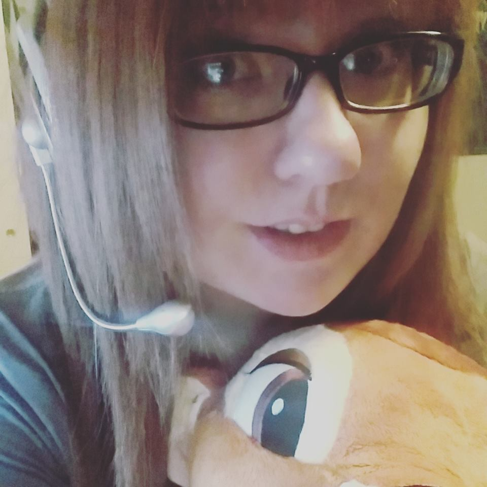

Build your own dreams, or someone else will hire you to build theirs.
-Farrah Gray
-Farrah Gray

I'm set to graduate in the Summer of 2016 with my double major in Communication Studies and Visual Communication Design. I was inspired to become a Graphic Designer at the age of 14 and have not given up. I did add the Comm. Studies major because it is something else that I love and I feel that it pairs nicely with the VCD major.
Finishing up Fall Quarter 2015 and loving the colder weather!
I will gladly take most commissions requested of me. For now, my prices depend solely on the money needed for supplies and how much time will be spent on the project. I do all sorts of projects from gaming playmats to designs or paintings. Head on over to the about page to get my email!